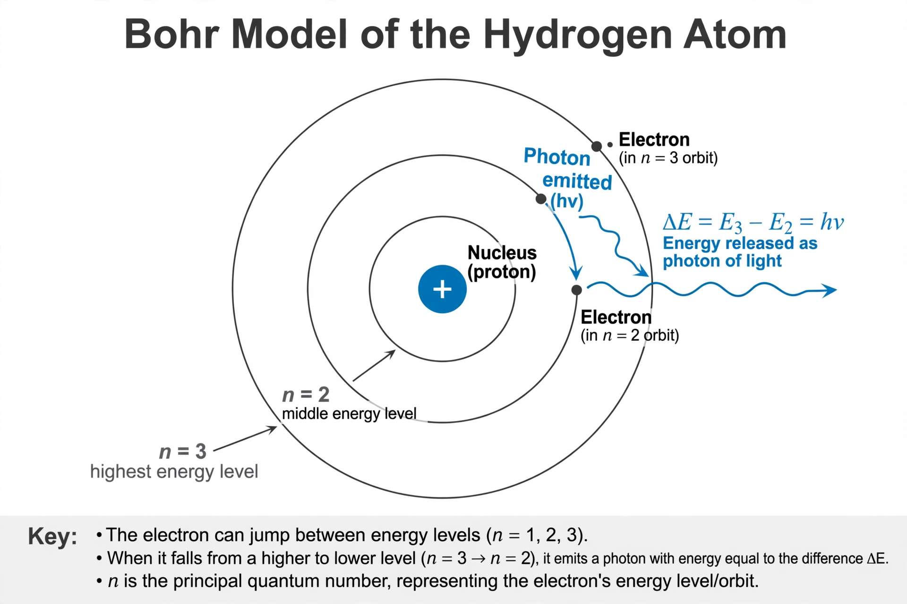

Bohr model

[Image: Diagram of the Bohr model of the hydrogen atom: an electron in circular orbits around a nucleus, jumping between levels]In atomic physics, the Bohr model (or Rutherford–Bohr model) is an obsolete model of the atom proposed in 1913 by Niels Bohr and Ernest Rutherford. It depicts the atom as a small, dense nucleus surrounded by electrons travelling in circular orbits — reminiscent of the Solar System — with the crucial difference that the electrons' angular momentum is quantised.
The model successfully explained the spectral lines of Hydrogen (the Rydberg formula) and gave the first physical picture of atomic structure incorporating Max Planck's quantum ideas, but it failed for multi-electron atoms and was superseded in the 1920s by modern quantum mechanics, in which electrons occupy orbitals rather than orbits. It remains a standard first picture taught in schools.
Postulates and results
Bohr postulated that electrons move in certain stable orbits without radiating (contradicting classical electrodynamics), that radiation is emitted or absorbed only in jumps between orbits with photon energy equal to the energy difference, and that the angular momentum of an orbit is a whole multiple of ħ. From these assumptions follow hydrogen's energy levels E_n = −13.6 eV/n² and its observed spectrum, as well as the size of the atom (the Bohr radius, ~0.529 ångströms).
Development and supersession
Bohr's 1913 trilogy of papers built on Rutherford's nuclear atom and Planck's quantum. Arnold Sommerfeld extended the model with elliptical orbits and relativistic corrections (accounting for fine structure), and it anchored the 'Old quantum theory' of 1913–1925. Its limits — helium, molecular bonds, line intensities, zero angular momentum ground state — accumulated until the matrix and wave mechanics of 1925–26 replaced it, explaining the model's successes as special cases of the hydrogen atom's quantum solution.